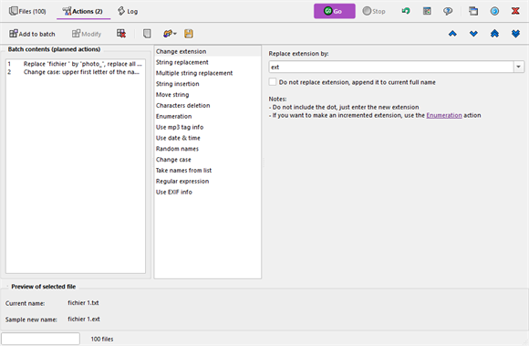
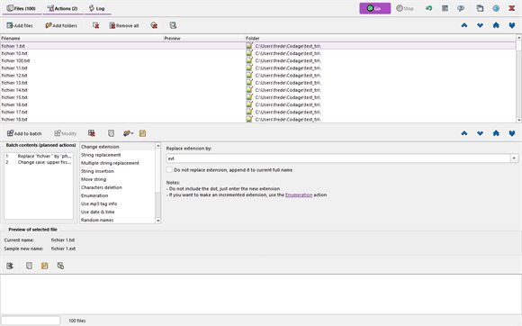
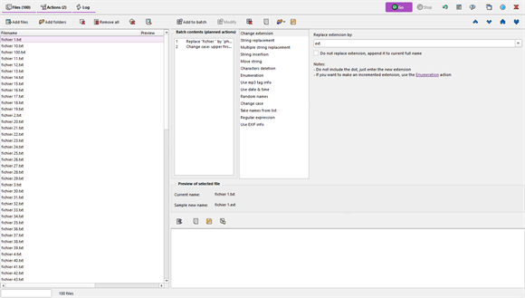

This chapter is specific to Ant Renamer Qt. In addition to the classic layout described in the rest of this help, the program can show its main window with a modern layout: the same functions and the same renaming engine, with another presentation. The classic layout stays the default one.
Open the options window, Display page:
The changes are applied the next time the program starts. The modern layout keeps its own window size, column widths and splitter positions, so the classic layout is not affected: you can go back to it at any time.
The main bar at the top of the window contains the three pages buttons (Files, Actions, Log), which show how many files are in the list and how many actions are planned, for example "Files (100)" and "Actions (2)". On the right are the Go button (the only coloured one), Stop, Undo, Options, Help, Always on top, About and Exit.
The other buttons are not in the main bar any more: each page has its own slim toolbar at the top of the page (add and remove files for the Files page, the batch commands for the Actions page, the filter and the log commands for the Log page). The buttons that move items are at the right of the Files and Actions toolbars. The toolbars of the modern layout cannot be moved. Keyboard shortcuts are the same as in the classic layout.
One page at a time, like the classic layout, with the new look.

The three pages are shown together, one above the other: files on top, actions in the middle, log at the bottom.

Files on the left, actions on the right above the log. This arrangement suits wide screens.

In both single screen arrangements:
The list shows the current name, the new name (Preview column) and the folder. The Preview column is visible by default; as in the classic layout it is filled with the "Refresh preview" button (F5). Columns can still be shown, hidden, moved and resized from the menu of the headers.
In the classic layout an action cannot be modified once it has been added to the batch. In the modern layout it can, for every type of action:
The Modify button also works without the double-click: it replaces the selected action of the list with the settings that are currently in the editor. The bar of the modification disappears by itself if the action is removed or moved meanwhile.